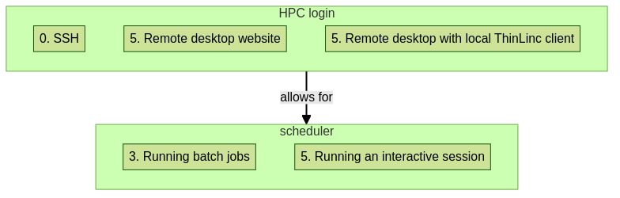

Introduction R
see a first overview of the R programming language
see the overview of the course
Teaching goals are:
Learners have seen an overview of the course
Learners have seen an first overview of the R programming language
Lesson plan (20 minutes in total):
2 min: discuss random people with videos, based on recommendation by [Bell, Mike. The fundamentals of teaching: A five-step model to put the research evidence into practice. Routledge, 2020]
- 5 mins: prior knowledge
What is R?
Why use R?
What are features of R?
Can R do everything?
What are R packages?
5 mins: presentation: First overview of R
5 mins: presentation: Course schedule
3 mins: feedback
Course learning objectives
use the module system to load R
use the module system to load site-installed R packages
find out which versions of R and packages are installed
run R scripts
write a batch script for running R
install R packages from CRAN
see how to install other R packages yourself
start batch jobs
run RStudio
on HPC2N or UPPMAX
Course non-goals
improve R coding skills
use R on other HPC clusters
First overview of R
R is a programming language for statistical computing and data visualization (from Wikipedia).
![flowchart TD
subgraph r[R]
r_interpreter[the R interpreter]
r_packages[R packages]
r_language[the R programming language]
r_dev[R software development]
rstudio[RStudio]
interpreted_language[Interpreted]
cran[CRAN]
end
r_language --> |has| r_dev
r_language --> |is| interpreted_language
r_language --> |uses| r_packages
interpreted_language --> |done by| r_interpreter
r_packages --> |maintained by| cran
r_dev --> |commonly done in| rstudio](../_images/mermaid-6aedb833362ae1451167dfa93cbd6f2436a4c577.png)
The main general R resources are:
R is used in many NAISS centres:
here is an overview of 6 NAISS centres and their R documentation
here is an (incomplete) overview of R courses being taught at NAISS
R Exercise files
On HPC2N, you can copy the R exercise tarball from /proj/nobackup/r-py-jl-m/exercises-r.tar.gz
On UPPMAX, you can copy the R exercise tarball from /proj/r-py-jl-m-rackham/exercises-r.tar.gz
On LUNARC, you can copy the R exercise tarball from
Schedule
![flowchart TD
subgraph r[R]
r_interpreter[1. the R interpreter]
r_packages[2. R packages]
r_virtual_environments[2. R virtual environments]
r_language[1. the R programming language]
parallel_and_multithreaded_functions[3. Parallel and multithreaded functions]
r_dev[5. R software development]
rstudio[5. RStudio]
ml[4. Machine learning]
interpreted_language[1. Interpreted]
cran[1. CRAN]
end
subgraph modules[modules]
r_module[1. R module]
r_packages_module[2. R_packages module]
rstudio_module[5. RStudio module]
end
r_language --> |has| r_dev
r_language --> |is| interpreted_language
r_language --> |uses| r_packages
interpreted_language --> |done by| r_interpreter
r_packages --> |maintained by| cran
r_packages --> |isolated by|r_virtual_environments
r_language --> |allows| parallel_and_multithreaded_functions
r_language --> |provides for| ml
r_dev --> |commonly done in| rstudio
r_interpreter --> |loaded by|r_module
r_packages --> |loaded by|r_packages_module
rstudio --> |loaded by|rstudio_module
rstudio_module --> |automatically loads latest| r_packages_module
r_packages_module --> |automatically loads corresponding version of| r_module](../_images/mermaid-5441c3130b07270e6ea20edbdb7971d45d73c309.png)
Time |
Topic |
Teacher(s) |
|---|---|---|
9:00 |
First login |
BB + PO + RB |
9:45 |
Break |
. |
10:00 |
First login |
BB + PO + RB |
10:10 |
Syllabus |
RB |
10:20 |
Load modules and run |
RB |
10:45 |
Break |
. |
11:00 |
Packages |
BB |
11:30 |
Isolated environments |
BB |
12:00 |
Lunch |
. |
13:00 |
Batch |
BB |
13:30 |
Parallel |
PO |
14:15 |
Break |
. |
14:30 |
Simultaneous session |
PO * RB * ?RP |
15:15 |
Break |
. |
15:30 |
Machine learning |
BB or PO |
16:00 |
Summary and evaluation |
RB |
16:15 |
Done |
. |
Simultaneous session:
HPC2N: ThinLinc & RStudio, by PO
UPPMAX: ThinLinc, RStudio, interactive, by RB
LUNARC, by ?RP